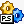

function FindWindow(C1, C2: PChar): Longint; external 'FindWindowA@user32.dll stdcall';

This article provides an overview of the new RemObjects Pascal Script and explains how to create some simple scripts.
Pascal Script comprises two different parts:
The two parts have no interdependencies. You can use them directly, or you can use them in theTPSScriptcomponent, which can be found in the uPSComponent.pas unit, and wraps them both in one easy to use class.
To use the component version of Pascal Script, you must first place it on your form or data module, set or assign the script property and call the Compile method and the Execute method. Compile errors, warnings or hints can be found in the CompilerMessages array property, while runtime errors can be found by reading the ExecErrorToString property.
The following example will compile and execute an empty script ("begin end."):
var
Messages: string;
compiled: boolean;
begin
ce.Script.Text := 'begin end.';
Compiled := Ce.Compile;
for i := 0 to ce.CompilerMessageCount -1 do
Messages := Messages +
ce.CompilerMessages[i].MessageToString +
#13#10;
if Compiled then
Messages := Messages + 'Succesfully compiled'#13#10;
ShowMessage('Compiled Script: '#13#10+Messages);
if Compiled then begin
if Ce.Execute then
ShowMessage('Succesfully Executed')
else
ShowMessage('Error while executing script: '+
Ce.ExecErrorToString);
end;
end;
By default, the component only adds a few standard functions to the scripting engine (the exact list can be found at the top of uPSComponents.pas).
Besides the standard functions, there are a few libraries included with Pascal Script:
|  | TPSDllPlugin | Allow scripts to use dll functions, the syntax is like: function FindWindow(C1, C2: PChar): Longint; external 'FindWindowA@user32.dll stdcall'; |
| TPSImport_Classes | Import library for TObject and the Classes unit. | |
|
TPSImport_DateUtils | Import library for date/time related functions. |
| TPSImport_ComObj | Access COM Objects from your scripts. | |
| TPSImport_DB | Import library for db.pas. | |
| TPSImport_Forms | Import library for the Forms & Menus units. | |
| TPSImport_Controls | Import library to Controls.pas and Graphics.pas. | |
| TPSImport_StdCtrls | Import library for ExtCtrls and Buttons. |
To use these libraries, add them to your form or data module, select the [...] button next to the plugins property of the TPSCompiler component, add a new item and set the Plugin property to the plugin component. Besides the standard libraries, you can easily add new functions to the scripting engine. In order to do that, create a new method you would like to expose to the scripting engine, for example:
procedure TForm1.ShowNewMessage(const Message: string);
begin
ShowMessage('ShowNewMessage invoked:'#13#10+Message);
end;
Then assign an event handler to the OnCompile event and use the AddMethod method of TPSCompiler to add the actual method:
procedure TForm1.CECompile(Sender: TPSScript);
begin
Sender.AddMethod(Self, @TForm1.ShowNewMessage,
'procedure ShowNewMessage
(const Message: string);');
end;
A sample script that uses this function could look like this:
begin
ShowNewMessage('Show This !');
end.Advanced Features
Pascal Script includes a preprocessor that allows you to use defines ({$IFDEF}, {$ELSE}, {$ENDIF}) and include other files in your script ({$I filename.inc}). To enable these features, you must set the UsePreprocessor property to true and the MainFileName property to match the name of the script in the Script property. The Defines property specifies which defines are set by default, and the OnNeedFile event is called when an include file is needed.
function TForm1.ceNeedFile(Sender: TObject;
const OrginFileName: String;
var FileName, Output: String): Boolean;
var
path: string;
f: TFileStream;
begin
Path := ExtractFilePath(ParamStr(0)) + FileName;
try
F := TFileStream.Create(Path, fmOpenRead or fmShareDenyWrite);
except
Result := false;
exit;
end;
try
SetLength(Output, f.Size);
f.Read(Output[1], Length(Output));
finally
f.Free;
end;
Result := True;
end;
When these properties are set, the CompilerMessages array property will include the file name these messages occur in.
Additionally, you can call scripted functions from Delphi. The following sample will be used as a script:
function TestFunction(Param1: Double; Data: String): Longint;
begin
ShowNewMessage('Param1: '+FloatToString(param1)
+#13#10+'Data: '+Data);
Result := 1234567;
end;
begin
end.
Before this scripted function can be used, it has to be checked to match its parameter and result types, which can be done in the OnVerifyProc event.
procedure TForm1.CEVerifyProc(Sender: TPSScript;
Proc: TPSInternalProcedure;
const Decl: String;
var Error: Boolean);
begin
if Proc.Name = 'TESTFUNCTION' then begin
if not ExportCheck(Sender.Comp, Proc,
[btS32, btDouble, btString], [pmIn, pmIn]) then begin
Sender.Comp.MakeError('', ecCustomError, 'Function header for
TestFunction does not match.');
Error := True;
end
else begin
Error := False;
end;
end
else
Error := False;
end;
The ExportCheck function checks if the parameters match. In this case, btu8 is a boolean (the result type), btdouble is the first parameter, and btString the second parameter. [pmIn, pmIn] specifies that both parameters are IN parameters. To call this scripted function, you have to create an event declaration for this function and call that.
type
TTestFunction = function (Param1: Double;
Data: String): Longint of object;
//...
var
Meth: TTestFunction;
Meth := TTestFunction(ce.GetProcMethod('TESTFUNCTION'));
if @Meth = nil then
raise Exception.Create('Unable to call TestFunction');
ShowMessage('Result: '+IntToStr(Meth(pi, DateTimeToStr(Now))));
It's also possible to add variables to the script engine, which can be used from within the script. To do this, you have to use the AddRegisteredVariable function. You can set this in the OnExecute event :
procedure TForm1.ceExecute(Sender: TPSScript);
begin
CE.SetVarToInstance('SELF', Self);
// ^^^ For class variables
VSetInt(CE.GetVariable('MYVAR'), 1234567);
end;
To read this variable back, after the script has finished executing, you can use the OnAfterExecute event: VGetInt(CE.GetVariable('MYVAR')).
Registering external variables to the script engine is also possible. It's a two step process, first, in the OnCompile event, add the types to the script using the AddRegisteredPTRVariable function.
procedure TMyForm.PSScriptCompile(Sender: TPSScript);
begin
Sender.AddRegisteredPTRVariable('MyClass', 'TButton');
Sender.AddRegisteredPTRVariable('MyVar', 'Longint');
end;
This will register the external MyClass and MyVar variables. Second, attach a pointer to these variables in the OnExecute event:
procedure TMyForm.PSScriptExecute(Sender: TPSScript);
begin
PSScript.SetPointerToData('MyVar', @MyVar, PSScript.FindBaseType(bts32));
PSScript.SetPointerToData('Memo1', @Memo1, PSScript.FindNamedType('TMemo'));
end;
There are two types of variables in Pascal Script, base types, which are simple types (see the table below), and class types. Base types are registered in the uPSUtils.pas unit and can be located using the FindBaseType function. Class types have to be located by name, using the FindNamedType. Changes to these variables have a direct effect on the actual variable.
Base types:
| btU8 | Byte |
| btS8 | Shortint |
| btU16 | Word |
| btS16 | Smallint |
| btU32 | Longword |
| btS32 | Longint |
| btS64 | Int64 |
| btSingle | Single |
| btDouble | Double |
| btExtended | Extended |
| btVariant | Variant |
| btString | String |
| btWideString | WideString |
| btChar | Char |
| btWideChar | WideChar |
The component version of Pascal Script also supports execution of scripted functions. This works by using the ExecuteFunction method.
ShowMessage(CompExec.ExecuteFunction([1234.5678, 4321,
'test'],
'TestFunction'));
This will execute the function called 'TestFunction' with 3 parameters, a float, an integer and a string. The result will be passed back to ShowMessage.
Notes: